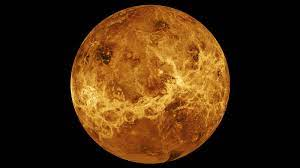
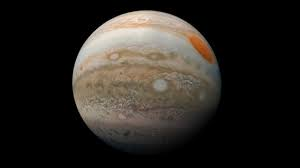
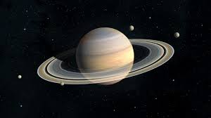

Planets
1. Mercury
This planet is the smallest planet in our solar system. Its radius is a mere 2,439.7 km. In fact, one could fit 18 mercury's inside earth! It is also the nearest planet to the Sun, just 57.91 million kilometers away. Despite its close proximity to the sun, its temperature is very fluctuant. This planet's orbit is extremely elliptical too. Mercury has many factors that earth has. Scientists are of the belief that there is ice in mercury. It also has a think atmosphere. Surprisingly, mercury's has a humongous core (75% of the radius of the planet), not to mention that it has more iron in its core than any other planet in our solar system!
2. Venus
This planet is also known as earth's twin due to its remarkable similarity with earth in terms of size, composition and orbit. Even though it is not the closest planet to the sun, it is definitely the hottest planet in our solar system. In venus, temperatures can go up to a staggering 470 degrees Celsius. This is mainly because of the fact that venus is surrounded by an extremely thick atmosphere. Venus's atmosphere is about 92 times more dense than earth's. Venus's atmosphere is mainly made up of carbon dioxide and clouds of sulfuric acid. This prevents heat from escaping the planet, thus creating a greenhouse effect which is the reason venus is the hottest planet in the solar system. Venus is one of the only two planets that we can see when it crosses the sun. It is also the brightest planet visible from earth! In fact, it is also known as the "The Morning Star" and "The Evening Star" because it is the first "star" that is visible when the sun rises or sets.
3. Mars
This planet is considered to be the future for humankind. Earth has been a home for humans since the beginning, however, with global warming, climate change, water pollution, air pollution, deforestation this planet may not be our home for long. It is assumed that sooner or later humans will depart Earth and go to mars. Therefore, it is neccesary for us to know some vital facts about mars. Many people are aware of the fact that mars has water, but what they are unaware of is that the water of mars is mainly in the form of ice caps in the poles of the planet. It is also theorized that mars used to have a thicker atmosphere than it has now. Mars has 2 moons around it; phobos and deimos. It is theorized that in approximately 30 million to 50 million years, phobos will crash into the surface of mars, or rip apart due to the tidal force of the planet. The surface gravity in mars in 37% of what you will find on earth. Mars is also home to the tallest volcano in our solar system. According to NASA, this volcano is 25 kilometers high and 624 kilometers in diameter. The average temperature on this planet at the mid-latitudes is -45 degrees Celsius. The air pressure in mars is just about 1% of the air pressure in earth. Its atmosphere is mainly comprised of 95% carbon dioxide, 3% nitrogen and 1.6% argon.
4. Jupiter
This planet is the largest planet in our solar system. It is also the 4th brightest object in our solar system. Surprisingly, Jupiter has the shortest day amongst the planets in our solar system. It takes a mere 9 hours and 55 minutes to turn on its axis. It also takes almost 12 earth years to complete a full revolution around the sun! One of the most famous facts about the planet Jupiter is the "The Great Red Spot". This storm has been raging for over 350 years and is so big, it could fit 3 earth's inside it. Jupiter also has the strongest magnetic field in the solar system. Compared to earth, Jupiter's magnetic field is 14 times more stronger! Jupiter also has a thin ring system which are made of dust. Jupiter also has 79 moons, including Ganymede, the biggest moon in our solar system! Jupiter is also a gas giant, meaning it has no solid surface. Jupiter is mainly made up of hydrogen (90%) and helium (10%).
6. Saturn
This planet is extremely well known for its rings, but did you know that if you put this planet in a pool big enough for its size, it would float! Saturn is also the second biggest planet in our solar system, and is also a gas giant! The rings it is most well known for, are actually ice, dust and rock, their size is very fluctuating, they can be as small as sand particles, and as big as skyscrapers. Saturn is also quite a windy planet, with windspeed going up to 1,800 kilometres per hour at the equator! On earth the fastest winds go up to 400 kilometres per hour. A year in Saturn is approximately 29 Earth years! However, Saturn revolves on its axis quite quickly. A day in Saturn is 10 hours and 14 minutes. In fact, 764 earth’s could fit inside Saturn. Saturn also has 82 discovered moons, making this the planet with the most moons in our entire solar system. Saturn’s atmosphere has roughly 75% hydrogen and 25% helium.
6. Uranus
This planet is the 7th planet in our solar system. The distance between the sun and Uranus is 2.9 billion kilometres! A day on Uranus is 17 earth hours. Uranus also takes 84 earth years to complete one revolution around the sun. Uranus's mass is a dense fluid which is a mixture of water, methane and ammonia. Uranus also has 27 moons along with 13 rings! Only Voyager 2 has ever gone past this planet, no other spacecraft has had the opportunity to study Uranus from a close distance. Astonishingly, Uranus rotates from east to west like Venus, but unlike any planet in our solar system, Uranus rotates on its side! This planet is also the coldest in our solar system, with temperatures falling to a staggering -218 Celsius! In Uranus, wind speeds can go up to roughly 900 kilometers per hour!

7. Neptune
This planet is the most distant planet from the sun, and it is also the smallest gas giant. A year on Neptune is 165 Earth years and a day is 16 hours! Neptune also has 6 faint rings along with 14 moons. Like Uranus, only 1 spacecraft has ever gone past Neptune; Voyager 2. Neptune is also the windiest planet in our solar system, with windspeeds going up to 1931 kilometres per hour! The atmosphere of Neptune is mostly made up of hydrogen and helium with traces of methane. Neptune's magnetic field is also 27 more times powerful compared to Earth's. Neptune is also 4 times more wide than earth.